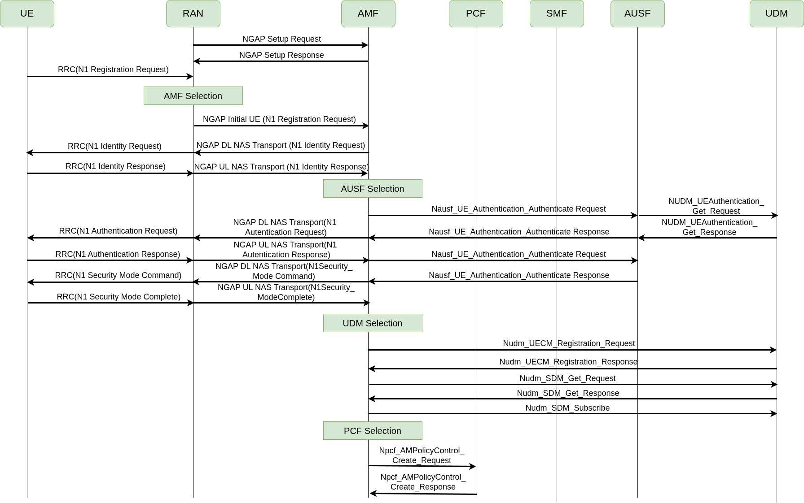

5G Architecture

The 5G system has three main parts:
- UE — your phone or device
- gNB — the base station
- 5G Core — the brain that manages connections, sessions, and data routing
OAI 5G NR Workshop — IIT Tirupati
March 14, 2026 | Afternoon Session
| Block | Topic |
|---|---|
| 0 | Setup: Clone repos and install utils |
| 1 | 5G Core Architecture & protocol stack |
| 2 | Deploying OAI 5G core |
| 3 | OAI deployment modes, building RAN, end-to-end 5G network |
| 4 | Understanding what happened: NAS, Registration, Authentication |
| 5 | Wireshark analysis & Configuration deep-dive |
Goal: By the end of this session,
If you haven’t set these up yet, lets setup.
sudo apt-get update
sudo apt-get install git❗ Make sure to select yes when the Wireshark
installation asks you whether non-superusers should be able to capture
packets. Otherwise, you will have to run in sudo mode.
sudo add-apt-repository ppa:wireshark-dev/stable
sudo apt update
sudo apt install -y git net-tools wiresharksudo apt install -y iperf3sudo apt install -y apt-transport-https ca-certificates curl software-properties-common
curl -fsSL https://download.docker.com/linux/ubuntu/gpg | sudo apt-key add -
sudo add-apt-repository "deb [arch=amd64] https://download.docker.com/linux/ubuntu $(lsb_release -cs) stable"
sudo apt update
sudo apt install -y docker docker-ce❗ Add your username to the docker group, otherwise you will have to run in sudo mode.
sudo usermod -a -G docker $(whoami)❗ Now, close the terminal tab and re-open it.
If you dont have a docker account, create a docker account in docker signup
Login to docker
Enter your password
# Clone the workshop repo
cd ~
git clone https://github.com/RajeevGa/iittp-oai-hands-on.git
cd iittp-oai-hands-on This repo contains configs, scripts, pcap traces, and these slides.
The 5G system has three main parts:
| NF | Full Name | What It Does |
|---|---|---|
| AMF | Access & Mobility Management | Registration, authentication relay, mobility |
| SMF | Session Management | PDU session setup, IP allocation, QoS |
| UPF | User Plane Function | Packet routing, forwarding, data path |
| AUSF | Authentication Server | Handles 5G-AKA authentication |
| UDM | Unified Data Management | Subscriber data, credentials |
| NRF | Network Repository Function | NF discovery — the “phonebook” |
| NSSF | Network Slice Selection | Selects the right network slice |
| PCF | Policy Control | Policy and charging rules |


Control Plane

User Plane
NR-Uu: Radio interface (UE ↔︎ gNB) N2: gNB ↔︎ AMF — NGAP over SCTP N11: AMF ↔︎ SMF — HTTP/2 (Service-Based Interface)
Open a new terminal and clone the ran repository
The docker compose file and configuration files for
OAI 5G Core is present in the following directory
Now, pull the 5G core docker images
start core network
watch status of the core network
All the docker containers should be healthy
Important files: MySQL database stores the subscriber data, yaml file is contains details of all NFs
Some useful commands
For this workshop: We use rfsim so everyone can participate with just a laptop
In the lab: We will also show a live over-the-air demo with real SDR hardware!

cd ~/iittp-oai-hands-on/openairinterface5g/cmake_targets/ran_build/build
sudo ./nr-softmodem -O ~/iittp-oai-hands-on/ran/conf/gnb.sa.band78.fr1.106PRB.usrpb210.conf --gNBs.[0].min_rxtxtime 6 --rfsim --rfsimulator.[0].serveraddr serverWatch for in the logs:
[NGAP] Send NGSetupRequest to AMF
[NGAP] 3584 -> 0000e000
[NGAP] Served GUAMIs for AMF OAI-AMF (assoc_id=23):
[NGAP] GUAMI:
[NGAP] PLMN: MCC=001, MNC=01
[NGAP] AMF Region ID: 1
[NGAP] AMF Set ID: 1
[NGAP] AMF Pointer: 1
[NGAP] Supported PLMN 0: MCC=001 MNC=01
[NGAP] Supported slice (PLMN 0): SST=0x01 SD=000
[NGAP] Received NGSetupResponse from AMF
[UTIL] threadCreate() for TASK_GTPV1_U: creating thread with affinity ffffffff, priority 50
[GNB_APP] [gNB 0] Received NGAP_REGISTER_GNB_CNF: associated AMF 1This means gNB has successfully connected to the 5G Core!
In another terminal:
cd ~/iittp-oai-hands-on/openairinterface5g/cmake_targets/ran_build/build
sudo ./nr-uesoftmodem -r 106 --numerology 1 --band 78 -C 3619200000 --ssb 516 --rfsim -O ~/iittp-oai-hands-on/ran/conf/nrue.confWatch the logs for these milestones:
[NR_RRC] State = NR_RRC_CONNECTED
[NR_RRC] RRCReconfiguration includes Measurement Configuration
[NR_RRC] Measurement gaps not yet supported!
[NAS] [UE 0] Received NAS_CONN_ESTABLI_CNF: errCode 1, length 98
[NR_RRC] rrcReconfigurationComplete Encoded 10 bits (2 bytes)
[NR_RRC] Logical Channel UL-DCCH (SRB1), Generating RRCReconfigurationComplete (bytes 2)
[NAS] Received PDU Session Establishment Accept, UE IPv4: 10.0.0.2
[OIP] TUN Interface oaitun_ue1 successfully configured, IPv4 10.0.0.2, IPv6 (null)🎉 Your UE is connected to the 5G network!
gNB logs — check for:
[NR_RRC] [UL] (cellID bc614e, UE ID 1 RNTI 70af) Received RRCReconfigurationComplete
[NR_RRC] PDU Session Setup: ID=10, outgoing TEID=0x16461cbc, Addr=192.168.70.129
[NR_RRC] NGAP_PDUSESSION_SETUP_RESP: sending the message
[NGAP] Encoded PDU Session Transfer (10): TEID=0x16461cbc, Addr=192.168.70.129nrUE — check interface is up:
You should see an IP address like 10.0.0.x
In another terminal:
# From UE to the external data network container
ping -I oaitun_ue1 192.168.70.135
# From the container to the UE (downlink)
docker exec -it oai-ext-dn ping <UE IP address>192.168.70.135 is the IP address of the
oai-ext-dn container.oai-ext-dn container is mimicking the Internet
here!Start iperf3 server inside the external data network container:
On the host in a new terminal, run iperf3 client bound to the UE IP:
# Downlink test
iperf3 -B <UE IP ADDRESS> -c 192.168.70.135 -u -b 50M -R
# Uplink test
iperf3 -B <UE IP ADDRESS> -c 192.168.70.135 -u -b 20M🎉 Congratulations — you have a working end-to-end 5G network!

When you launched the nrUE, all these messages are exchanged,
let’s break it down!
Before we look at the signaling, let’s understand some parameters you configured:
5G Core:
~/iittp-oai-hands-on/cn/conf/config.yaml
gNB:
~/iittp-oai-hands-on/ran/conf/gnb.sa.band78.106prb.rfsim.conf
nrUE:
~/iittp-oai-hands-on/ran/conf/nrue.conf
~/iittp-oai-hands-on/cn/conf/config.yaml~/iittp-oai-hands-on/ran/conf/gnb.sa.band78.106prb.rfsim.confWhen you turn on your phone or enter a new coverage area, it needs to register with the network before it can make calls or use data.
This happens in a few steps:
Every phone has a few key identifiers — think of them as different types of ID cards:
🛂 IMSI — International Mobile Subscriber Identity
📟 IMEI — International Mobile Equipment Identity
📞 MSISDN — Your phone number
🏷️ GUTI / 5G-GUTI — Temporary ID
An IMSI is a 15-digit number with three parts:
IMSI: 404 49 1234567890
│ │ │
│ │ └── MSIN: Mobile Subscriber Identification Number (9-10digits. your unique ID within the network)
│ └───── MNC: Mobile Network Code (49 = Airtel), 2-3 digits.
└───────── MCC: Mobile Country Code (404 = India) ~/iittp-oai-hands-on/cn/conf/config.yaml~/iittp-oai-hands-on/ran/conf/nrue.confsequenceDiagram
participant UE
participant gNB
participant AMF
participant AUSF
participant UDM
Note over UE,gNB: Radio connection established (RRC)
UE->>gNB: Registration Request (SUCI)
gNB->>AMF: NGAP Initial UE Message (Registration Request)
Note over AMF: AMF selects AUSF
AMF->>AUSF: Authentication Request (SUCI)
AUSF->>UDM: Get Auth Vectors (SUCI)
UDM-->>AUSF: Auth Vector (RAND, AUTN, XRES*)
AUSF-->>AMF: Auth Response (RAND, AUTN, HXRES*)
AMF->>UE: Authentication Request (RAND, AUTN)
UE-->>AMF: Authentication Response (RES*)
Note over AMF: Compare HRES* with HXRES*
AMF->>AUSF: Verify RES*
Note over AUSF: Compare RES* with XRES*
AUSF-->>AMF: Authentication Success
AMF->>UE: Security Mode Command
UE-->>AMF: Security Mode Complete
AMF->>UE: Registration Accept (5G-GUTI)
UE-->>AMF: Registration CompletegNB AMF
│ │
│──── NGSetupRequest ───────────────►│
│ • GlobalRANNodeID │
│ • Supported Tracking Areas │
│ • Paging DRX │
│ │
│◄─── NGSetupResponse ──────────────│
│ • AMF Name │
│ • Served GUAMI List │
│ • PLMN Support List │
│ • Relative AMF Capacity │
│ │When a UE (phone) turns on and wants to connect to the network.
UE gNB AMF
│ │ │
│──NAS Reg───►│ │
│ Request │──── InitialUEMessage ─────────────►│
│ │ • RAN-UE-NGAP-ID │
│ │ • NAS-PDU: Registration Request │
│ │ │UE gNB AMF
│ │ │
│ │◄── DownlinkNASTransport ───────────│
│◄──NAS──────│ • AMF-UE-NGAP-ID │
│ Auth Req │ • RAN-UE-NGAP-ID │
│ │ • NAS-PDU: Auth Request │
│ │ │
│──NAS──────►│ │
│ Auth Resp │──── UplinkNASTransport ───────────►│
│ │ • NAS-PDU: Auth Response │
│ │ │UE gNB AMF
│ │ │
│ │◄── DownlinkNASTransport ───────────│
│◄──NAS──────│ • NAS-PDU: Security Mode Command │
│ SMC │ │
│ │ │
│──NAS──────►│ │
│ SM Complete │──── UplinkNASTransport ───────────►│
│ │ • NAS-PDU: Security Mode Complete│
│ │ │gNB AMF
│ │
│◄── InitialContextSetupRequest ────│
│ • AMF-UE-NGAP-ID │
│ • RAN-UE-NGAP-ID │
│ • Security Key │
│ • UE Security Capabilities │
│ • Allowed NSSAI (slices) │
│ • NAS-PDU: Registration Accept │
│ • (Optional: PDU Session │
│ Resource Setup List) │
│ │
│── InitialContextSetupResponse ───►│
│ • PDU Session Resource │
│ Setup Response List │
│ │sequenceDiagram
participant UE
participant AMF
participant AUSF
participant UDM
Note over UDM: Has K, OP/OPc for this SUPI
Note over UE: SIM has K, OP/OPc
UDM->>UDM: Generate RAND, compute AUTN, XRES, XRES*
UDM-->>AUSF: 5G HE Auth Vector (RAND, AUTN, XRES*)
AUSF->>AUSF: Compute HXRES* from XRES*
AUSF-->>AMF: 5G SE Auth Vector (RAND, AUTN, HXRES*)
AMF-->>UE: Auth Request (RAND, AUTN)
UE->>UE: Verify AUTN (check MAC), compute RES*
UE-->>AMF: Auth Response (RES*)
AMF->>AMF: Compute HRES*, compare with HXRES*
AMF->>AUSF: Verify (RES*)
AUSF->>AUSF: Compare RES* with XRES*
AUSF-->>AMF: Success + Kseafkey and opc fields in your
nrue.conf and the CN database!Let’s capture the signaling
Stop your gNB and UE if running
Open a capture using Wireshark in a new terminal window
Select “oai-cn5g” in the Capture filter
Select Display filter:
ngap || nas-5gs
Now restart the gNB and UE (same commands as before).
Let the UE connect fully, do a ping.
Lets analyze the capture in wireshark
In Wireshark, you should see these messages. Find and analyze each one.
| 1 | gNB → AMF | NGAP Setup Request | Contains gNB Id, Supported PLMN, etc. |
| 2 | AMF → gNB | NGAP Setup Response | Failure cause (or) AMF Id and PLMN list in case of success |
| 3 | gNB → AMF | NGAP: InitialUEMessage | Contains UE NAS PDU with SUCI for registration |
| 4 | AMF → gNB → UE | NAS: Authentication Request | Contains RAND and AUTN |
| 5 | UE → gNB → AMF | NAS: Authentication Response | Contains RES* |
| 6 | AMF → UE | NAS: Security Mode Command | Encryption algorithm selected |
| 7 | UE → AMF | NAS: Security Mode Complete | |
| 8 | AMF → UE | NAS: Registration Accept | Contains the assigned 5G-GUTI |
Click on each message and expand the NAS layer to see the actual field values.
Let’s compare what Wireshark shows with the theory:
Find the SUCI in the Registration Request — can
you see the MCC/MNC? Is the MSIN in clear text or concealed? Compare
with your nrue.conf
Find RAND and AUTN in the Authentication Request — these are the challenge from the network
Find RES* in the Authentication Response — this is the UE’s proof of identity
After Security Mode Command — are subsequent NAS messages encrypted? How can you tell?
Close the nrUE & gNB applications if thay are running
In seperate terminals run gNB and UE. But we will use different config file for UE!
Run the gNB same as before
For UE
Watch the AMF logs
Check Wireshark — do you see a Registration Reject?
Close the nrUE & gNB applications if thay are running
In seperate terminals run gNB and UE. But we will use different config file for UE!
Run the gNB same as before
For UE
Watch the AMF logs
Check Wireshark — do you see a Registration Reject? What happens to the authentication process?
Check UE logs
| Error | Cause | Check |
|---|---|---|
| NGAP Setup Failure | MCC/MNC mismatch between gNB and CN | gNB config vs CN config.yaml |
| Unidentified/Illegal UE | SUPI not in CN database | CN database (oai_db.sql) |
| Authentication Failure | Key or OPc mismatch | nrue.conf vs CN database |
docker logs oai-amf -fTo use a COTS phone/module instead of the OAI softmodem UE, you need a programmable SIM card.
oai_db.sql)
program_uicc📖 Full guide: OAI COTS UE Tutorial
Deployed a 5G Network
Understood What Happened
PDU Session & Data Plane (picking up where we left)
5G NR Radio Access Network
For tomorrow, you’ll need the same environment.
# To gracefully stop today's session:
1. Stop nrUE: Ctrl+C in the nrUE terminal
2. Stop gNB: Ctrl+C in the gNB terminal
3. Stop CN:
cd ~/iittp-oai-hands-on/openairinterface5g/doc/tutorial_resources/oai-cn5g
docker compose down # stop and remove containersDon’t delete the OAI build & core network images— we’ll use the same binaries tomorrow!
See you tomorrow!